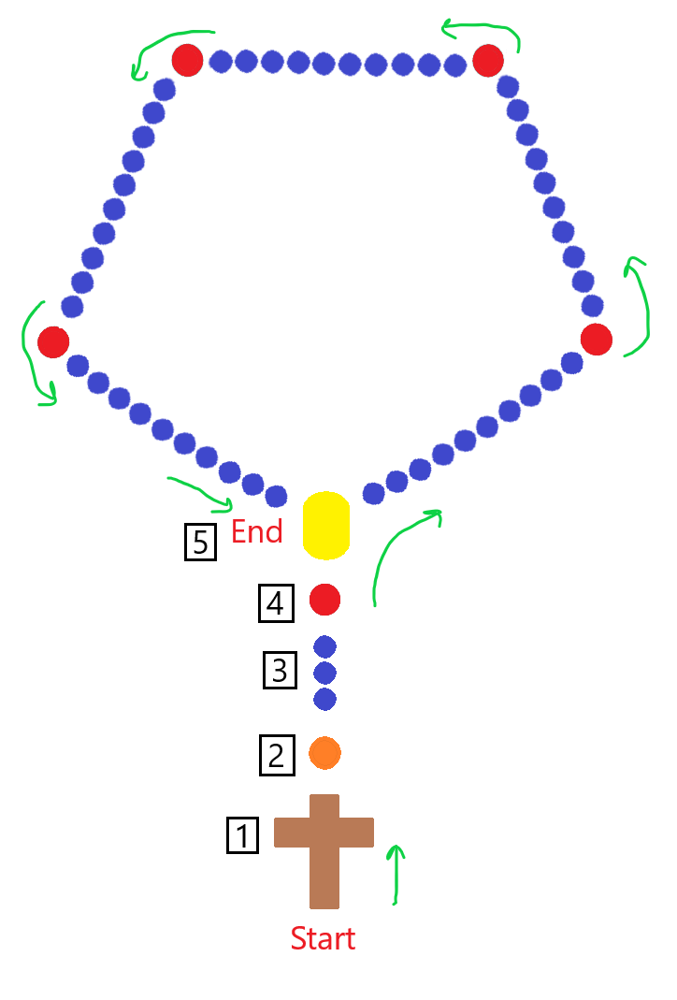

Holy Mary
Pray for us.

Pray the rosary
The rosary is a devotion in honor of our Lord Jesus Christ, and the faithful witness of his mother, the Virgin Mary. Mary gave St. Dominic the rosary in the same form we know today. Years later, Mary has come back again to ask that we continue to pray the rosary.
Get your FREE rosary
There is no barrier to pray the rosary, as we are providing to you companies who offer a rosary at no cost (besides shipping) to you.
How do you pray the rosary
For each bead, including the cross where you begin the rosary, a prayer or multiple prayers is said. Once you finish saying the prayers for the bead marked [4], you continue around the rosary, ending at the yellow center bead marked [5].
The prayers of the rosary
Following the diagram on the page, these are the prayers that are said while praying the rosary.
I believe in God, the Father almighty, creator of heaven and earth. I believe in Jesus Christ, his only Son, our Lord, who was conceived by the Holy Spirit and born of the virgin Mary. He suffered under Pontius Pilate, was crucified, died, and was buried; he descended to hell. The third day he rose again from the dead. He ascended to heaven and is seated at the right hand of God the Father almighty. From there he will come to judge the living and the dead. I believe in the Holy Spirit, the holy Catholic church, the communion of saints, the forgiveness of sins, the resurrection of the body, and the life everlasting. Amen.
Hail Mary full of Grace, the Lord is with thee. Blessed are thou among women and blessed is the fruit of thy womb Jesus. Holy Mary Mother of God, pray for us sinners now and at the hour of our death Amen.
We begin by saying the Glory Be.
Glory be to the Father and to the Son and to the Holy Spirit. As it was in the beginning is now, and ever shall be, world without end. Amen.
We then announce the Mystery, and meditate on this Mystery until we announce the next Mystery. (The Mysteries are listed below). We then say the prayer Mary asked us at Fatima.
O Jesus, forgive us our sins, save us from the fires of Hell, lead all souls to Heaven, especially those who have most need of your mercy.
Lastly, we say another Our Father.
Our Father who art in heaven, hallowed be thy name. Thy kingdom come. Thy will be done, on earth as it is in heaven. Give us this day our daily bread; and forgive us our trespasses, as we forgive those who trespass against us; and lead us not into temptation, but deliver us from evil. Amen.
Hail, Holy Queen, Mother of mercy, our life, our sweetness, and our hope. To thee do we cry, poor banished children of Eve, to thee do we send up our sighs, mourning and weeping in this valley of tears. Turn then, most gracious advocate, thine eyes of mercy toward us; and after this our exile show unto us the blessed fruit of thy womb Jesus, O clement, O loving, O sweet Virgin Mary. Pray for us, O holy Mother of God. That we may be made worthy of the promises of Christ.
The Final Prayer is then said.
O God, whose only-begotten Son, by His life, death, and resurrection, has purchased for us the rewards of eternal salvation; grant we beseech Thee, that meditating upon these mysteries of the most holy rosary of the Blessed Virgin Mary, we may imitate what they contain and obtain what they promise. Through the same Christ our Lord. Amen.
May the divine assistance remain always with us. And may the souls of the faithful departed, through the mercy of God, rest in peace. Amen.
What are the Mysteries
The Mysteries are events that center around the life of our Lord Jesus Christ. Certain Mysteries are used depending on the day that you are praying the rosary.
While praying the rosary, it is customary to say the order of the Mystery as you say the given Mystery. For example, when we reach the bead marked [4], we would say; "The 1st joyful mystery, the annunciation of the Lord to Mary." The next red bead where we say a Mystery, we would say; "The 2nd joyful mystery, the visitation of Mary to Elizabeth" and so on.
The Joyful Mysteries (Monday and Saturday)- The Annunciation of the Lord to Mary
- The Visitation of Mary to Elizabeth
- The Nativity of our Lord Jesus Christ
- The Presentation of our Lord
- Finding Jesus in the Temple
- The Agony of Jesus in the Garden
- The Scourging at the Pillar
- Jesus is Crowned with Thorns
- Jesus Carried the Cross
- The Crucifixion of our Lord
- The Resurrection of Jesus Christ
- The Ascension of Jesus to Heaven
- The Descent of the Holy Ghost
- The Assumption of Mary into Heaven
- Mary is Crowned as Queen of Heaven and Earth
- The Baptism in the Jordan
- The Wedding at Cana
- The Proclamation of the Kingdom
- The Transfiguration
- The Institution of the Eucharist
What has Mary told us about the rosary
Mary has come to us in different times telling us these things about the rosary:
To Saint Dominic (13th century)- Whoever shall faithfully serve me by the recitation of the rosary, shall receive signal graces.
- I promise my special protection and the greatest graces to all those who shall recite the rosary.
- The rosary shall be a powerful armor against hell, it will destroy vice, decrease sin, and defeat heresies.
- The rosary will cause virtue and good works to flourish; it will obtain for souls the abundant mercy of God; it will withdraw the hearts of men from the love of the world and its vanities, and will lift them to the desire for eternal things. Oh, that souls would sanctify themselves by this means.
- The soul which recommends itself to me by the recitation of the rosary, shall not perish.
- Whoever shall recite the rosary devoutly, applying himself to the consideration of its sacred mysteries shall never be conquered by misfortune. God will not chastise him in His justice, he shall not perish by an unprovided death; if he be just he shall remain in the grace of God, and become worthy of eternal life.
- Whoever shall have a true devotion for the rosary shall not die without the sacraments of the Church.
- Those who are faithful to recite the rosary shall have during their life and at their death the light of God and the plenititude of His graces; at the moment of death they shall participate in the merits of the saints in paradise.
- I shall deliver from Purgatory those who have been devoted to the rosary.
- The faithful children of the rosary shall merit a high degree of glory in Heaven.
- You shall obtain all you ask of me by the recitation of the rosary.
- All those who propagate the Holy rosary shall be aided by me in their necessities.
- I have obtained from my Divine Son that all the advocates of the rosary shall have for intercessors the entire celestial court during their life and at the hour of death.
- All who recite the rosary are my sons and daughters, and brothers and sisters of my only Son Jesus Christ.
- Devotion of my rosary is a great sign of predestination.
- Pray the rosary every day in honor of Our Lady of the rosary to obtain peace in the world . . . for she alone can save it.
- When you pray the rosary, say after each mystery: "O Jesus, forgive us our sins, save us from the fires of hell, lead all souls to Heaven, especially those who have most need of your mercy."